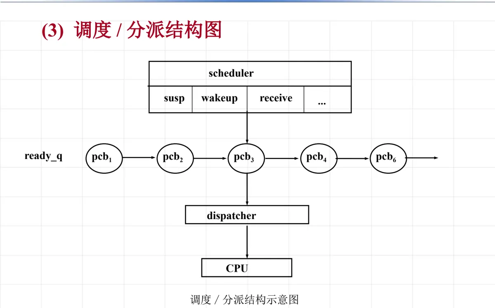

操作系统原理 · 第 6 章 处理机调度
6.4 进程调度
6.1 节把处理机调度分成宏观的作业调度和微观的进程调度两层，这一节专门讲后一层：当系统中有多个进程同时处于就绪状态时，处理机究竟交给谁、什么时候交、以什么方式交。内容分四步展开——先看清「调度＋分派」这个结构，再列进程调度要完成的三件事，然后回答「什么时候该重新调度」，最后讨论「能不能把正在运行的进程打断」。
1. 调度 / 分派结构
系统中处于就绪状态的进程往往不止一个，它们都盯着同一台处理机，都想占用中央处理器 CPU（Central Processing Unit）运行，这种竞争由进程调度程序来协调。从结构上看，进程调度的功能由调度和分派两部分组成：前者决定「谁排在前面」，后者负责「怎么交出去」。
（1）调度
依照确定的策略将一批就绪状态的进程排序；当有进程变成就绪时，将它插入到就绪队列，并按一定的策略排序。也就是说，调度负责维护就绪队列的次序，队列头部的那个进程，就是下一个最该运行的进程。
（2）分派
当调度时机来到时，移出就绪队列中第一个进程，建立它在处理机上的执行环境，使得它在处理机上执行。这一步才是真正把处理机交出去的动作：恢复被选中进程的处理机现场，让它接着上次的位置继续跑。
（3）调度 / 分派结构图
这张图把上面的分工画成了一条流水线。图的中央是调度程序（scheduler），它面对的是就绪队列（ready_q），队列上依次挂着各个就绪进程的进程控制块 PCB（Process Control Block，图中标为 pcb1、pcb2、pcb3、pcb4、pcb6，省略号「…」表示队列中还有同类节点）；调度程序按既定策略从队列中选出进程，交给分派程序（dispatcher），由分派程序完成处理机现场的切换，最终把 CPU 交给被选中的进程执行。整张图就是「就绪队列 → 调度程序 → 分派程序 → CPU」这条链，标题写作「调度/分派结构示意图」。
图的外围还标出了驱动进程进出就绪队列的外部事件：挂起（susp）、唤醒（wakeup）、接收消息（receive）等。它们本身不直接分配处理机，而是通过改变进程的状态来改变就绪队列的内容——有新进程变成就绪，调度程序就会被再次触发。可见进程调度是一个持续发生的循环：进程进来、被排序、被选中、被分派，运行中又因各种事件离开或重新排队。

2. 进程调度的功能
把上面的结构拆开看，进程调度程序日常要完成三件事。
（1）记录进程的状态变化
进程会在运行态、就绪态、等待态之间来回迁移，调度程序必须如实记录每一次状态变化，才能随时知道「现在有哪些进程可以参与处理机的竞争」。记录状态是调度和分派的前提，也是第 4 章进程控制里阻塞、唤醒等原语能够生效的基础。
（2）决定调度策略
策略决定就绪队列按什么次序排列，因而直接决定了下一个被选中的是谁。课件给出两种基本选择：
- ① 优先级调度：就绪队列按进程优先级高低排序；
- ② 先来先服务：就绪队列按进程到来的先后次序排序。
这两种策略的差别在于「插队」的依据——优先级调度关心进程有多重要、多紧迫，所以后来的高优先级进程可以排到前面；先来先服务只关心进程等了多久，先到先得，实现简单、对谁都一视同仁，却照顾不了紧急任务。先来先服务的思路与 6.3 节作业调度中的先来先服务调度算法一致，只是排队的对象从作业换成了进程；优先级调度则会在 6.5 节的进程优先数调度算法中具体展开。
（3）实施处理机的分配和回收
策略定下来之后总要有动作落地：把处理机分配给被选中的进程，并在进程让出处理机（阻塞、时间片用完、结束）时把它收回来，交给下一个进程。分配与回收是一对，只分配不回收，处理机就再也交不出去。
3. CPU 调度的时机
不是任何时候都能重新分配处理机，只有下面五种情况发生时，才会发生 CPU 调度：
- 当一个进程执行系统调用后，使得该进程从运行态切换成等待态时（等待、延时）；
- 当一个进程从运行态切换成就绪态时（时间片到）；
- 在可剥夺调度方式中，出现更高优先级的就绪进程时（新执行的进程、被唤醒的进程）；
- 当一个进程完成任务、正常中止时；
- 当一个进程异常出错时。
这五种时机还可以再分一类：第 ①②④⑤ 种是非剥夺方式与剥夺方式共有的，它们的共同点是当前进程的状态发生了变化——转入等待、被换回就绪（时间片到）、正常结束或异常终止，处理机空出来了，自然要重新选一个进程；而第 ③ 种只有剥夺方式才有，因为它意味着当前进程的状态并没有变，处理机是被「抢」走的。能不能抢，正是下一小节要回答的问题。
4. 进程调度的方式
（1）什么是调度方式
调度方式要回答的是这样一个问题：当一个进程正在处理机上执行时，若有某个更为「重要而紧迫」的进程需要运行，系统如何分配处理机。对这个问题的两种不同回答，就是非剥夺方式与剥夺方式。
（2）非剥夺方式
当「重要而紧迫」的进程来到时，正在执行的进程继续执行，直到该进程完成、或发生某事件而进入「完成」或「阻塞」状态时，才把处理机分配给那个「重要而紧迫」的进程。也就是说，处理机一旦交出就不再中途收回，非要等到当前进程自己走到一个停顿点为止，这种方式也叫非抢占方式。
（3）剥夺方式
当「重要而紧迫」的进程来到时，便暂停正在执行的进程，立即把处理机分配给优先级更高的进程，这种方式也叫抢占方式。上一小节说的第 ③ 种调度时机，就是为它准备的；而「暂停旧进程、保存现场、切到新进程」这套动作，仍然由分派程序完成。
两种方式各有代价，这里补充说明它们的适用场合：非剥夺方式实现简单、切换次数少、系统开销小，但一个长进程可能长时间占着处理机，紧急任务只能干等，响应时间没有保证；剥夺方式响应及时，适合分时系统和对实时性有要求的场合，代价是切换更频繁，现场保护与恢复的开销更大，还要额外处理数据被中途打断带来的一致性问题。选哪一种，取决于系统更看重响应时间，还是更看重吞吐量与开销。
本节小结
- 进程调度协调的是多个就绪进程对处理机的竞争，它由两部分组成：调度按策略排序并维护就绪队列，分派在时机到来时移出队首进程、建立其执行环境并交给处理机；
- 进程调度的功能有三项：记录进程的状态变化、决定调度策略（优先级调度或先来先服务）、实施处理机的分配和回收；
- 会触发 CPU 调度的五种情况：进程执行系统调用后转入等待态、进程从运行态转入就绪态（时间片到）、可剥夺方式下出现更高优先级的就绪进程、进程正常中止、进程异常出错；其中「出现更高优先级的就绪进程」只有剥夺方式才有，其余四种为两种方式所共有；
- 调度方式分两种：非剥夺方式要等当前进程完成或阻塞才交出处理机，剥夺方式则在更「重要而紧迫」的进程到来时立即暂停当前进程、把处理机交给优先级更高的进程；
- 本节讲的是「按什么结构、在什么时机、以什么方式」调度，具体算法留到后面：6.5 节的进程优先数调度算法实现优先级调度，6.6 节的循环轮转调度算法处理时间片到之后的轮转。